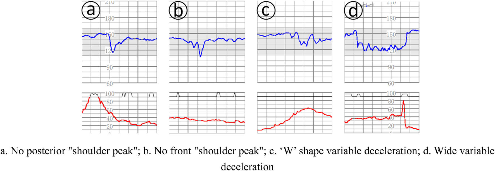

Página 8 · Vigilância aguda e cardiotocografia
Parâmetro 4b: o DIP variável (DIP III), a página das armadilhas
Aparece uma desaceleração no traçado e, ao lado dela, nenhuma contração registrada. Parece detalhe — e é a chave de uma resposta obrigatória de prova. Aqui é onde te derrubam: o DIP III é o mais variável, o que mais simula os outros e o que concentra as armadilhas. É, literalmente, o parâmetro que exige mais cuidado na prova.
DIP III: o variável / umbilical
O DIP III (variável / umbilical) é a desaceleração com forma, duração e momento variáveis, causada por compressão de cordão. Ao contrário dos outros dois, ele não tem uma cara fixa: ora afunda rápido, ora devagar, ora mais fundo, ora menos. E, crucialmente, pode ser benigno OU patológico — não é intrinsecamente ruim. É o único DIP que exige gradação.
Interativo: acione cada DIP para ver timing, significado e conduta.
O coração visual da aula: as três desacelerações sobre a mesma fileira de contrações, para a diferença de timing saltar aos olhos — DIP I coincide / DIP II é tardio / DIP III é variável. A seta temporal desaceleração↔metrossístole em cada um é o dispositivo que permite classificar qualquer desaceleração só de olhar.O oligodrâmnio favorece o DIP III
Um fator predispõe fortemente: oligodrâmnio / redução de líquido amniótico favorece o DIP III, porque menos líquido facilita a compressão do cordão — sem o coxim de líquido, o cordão é espremido a cada contração ou movimento. É link direto com a dinâmica do líquido: pouco líquido, mais compressão de cordão, mais DIP III.
Sem metrossístole = obrigatoriamente DIP III
A regra de resposta que a banca cobra como automática: desaceleração sem metrossístole — sem nenhuma contração no traçado — é obrigatoriamente DIP III. A lógica é de exclusão: sem contração, não há como ser DIP I (que depende da compressão cefálica pela contração) nem DIP II (que depende da compressão de vasos pela contração). Se afundou e não há contração ao lado, só sobra o variável. Essa é a resposta sempre que aparece desaceleração e nenhuma contração registrada.
→ é DIP III (por exclusão — fim)
classificar por timing: coincide = DIP I · tardio = DIP II · variável = DIP III
Sempre avaliando o traçado inteiro (20–40 min) — o DIP III simula II/I num trecho.
Nunca laudar por um trecho
Regra de ouro do parâmetro: nunca laudar por um único trecho. Avalia-se o traçado inteiro, dos 20 a 40 minutos — porque o DIP III pode simular um DIP II ou um DIP I num pedaço isolado. Um recorte de 30 segundos engana; o filme completo revela a variabilidade que dá o diagnóstico.
DIP I é sempre simétrico (assimétrico = DIP III descompensado)
Aqui uma pegadinha finíssima: o DIP I é sempre simétrico ("vai e volta" igual). Se a desaceleração demora a recuperar ou é assimétrica, mesmo coincidindo com uma contração, ela não é DIP I — é DIP III descompensado simulando um precoce. Ou seja: coincidir com a contração não basta para carimbar DIP I; tem de ser simétrico. Assimetria + coincidência = variável descompensado, não precoce.
Os padrões de alarme
O que separa o DIP III benigno do patológico são os padrões de alarme: recuperação lenta; afundar abaixo de 90 bpm e, em vez de recuperar, afundar de novo; padrão em W / bifásico / zigue-zague lá embaixo, com perda da linha de base e bradicardização. São os sinais de que o feto descompensou com a compressão de cordão e não tem reserva.
O "abaixo de 90 bpm" ensinado é didaticamente razoável, mas o limiar numérico de gravidade do nadir varia por fonte: algumas definem o variável complicado por <70 bpm por >60 segundos. O <90 é o corte de trabalho; a existência da faixa (<70 / >60 s) é minúcia de aluno avançado.
Interativo: clique em cada padrão de alarme para ver o que ele significa.
A compressão de cordão (favorecida por oligodrâmnio) e os sinais que separam o benigno do patológico: cada hotspot acende um padrão de alarme no traçado — recuperação lenta, <90 bpm que reafunda, W/bifásico — e os ombrinhos como sinal ainda-compensado.Os ombrinhos
Um achado associado, que muitas vezes é sinal tranquilizador de um DIP III ainda compensado: os ombrinhos — uma pequena aceleração antes e uma depois da desaceleração (os "ombros" que emolduram o vale). São resposta fisiológica à compressão inicial da veia umbilical e sinalizam que o feto ainda reage.
O DIP III pode ser inteiramente benigno
Feche a página com o lembrete que evita cesárea desnecessária: o DIP III pode ser inteiramente benigno — uma "esbarrada" de cordão aleatória, com boa oxigenação e retorno à linha de base, sem necessidade de antecipar o parto. O que decide não é a presença do DIP III, é a presença (ou não) dos padrões de alarme. Variável com boa variabilidade, recuperação rápida e ombrinhos: acompanha-se. Variável com <90 que reafunda, W e perda de variabilidade: descompensou.

O reconhecimento da variabilidade de forma do DIP III: desacelerações de formatos diferentes, com queda bifásica em "W".
No painel C, a FCF cai de forma abrupta, com dois vales sucessivos, compondo a morfologia em "W" típica da variável complexa. Os demais painéis reforçam a regra prática: no DIP III não se interpreta uma queda isolada — avalia-se o traçado como sequência, porque a relação com a contração, a profundidade, a duração e os ombros mudam ao longo do registro.
Fonte: Qiu T et al., Front Physiol 2025, Fig. 2 (painel C) — CC BY · página de origem
Quiz — fixação
No traçado aparece uma desaceleração e, no canal do tocógrafo, nenhuma contração naquele momento. Qual a classificação obrigatória?
- B) Correta. Sem metrossístole, DIP I e DIP II ficam impossíveis (ambos dependem da contração). Sobra o DIP III — a resposta automática de banca.
- A) "Precoce" faz pensar em algo que sempre aparece. DIP I depende da compressão cefálica pela contração; sem contração, não há DIP I.
- C) Pula para o DIP "grave" sem checar a contração. O DIP II também depende da contração (compressão de vasos); sem ela, impossível.
- D) Confunde "avaliar o traçado inteiro" com "esperar outro dia". A classificação é imediata pela regra de exclusão; não se adia.
Uma desaceleração coincide com a contração, mas é assimétrica e demora a recuperar, com um episódio afundando abaixo de 90 bpm que volta a cair. A leitura mais correta é:
- B) Correta. Coincidir com a contração não basta para DIP I — este é sempre simétrico. Assimetria + recuperação lenta + <90 que reafunda = DIP III descompensado.
- A) A pegadinha fina. Carimbar DIP I só porque coincide, ignorando a assimetria — a coincidência temporal é verdadeira e distrai da forma.
- C) Usa um termo real da página fora de lugar. Ombrinhos são acelerações que emolduram um DIP III (tranquilizadores); aqui o quadro é de descompensação.
- D) Distrator de outro parâmetro. Descreve um evento de desaceleração, não a oscilação da linha de base.
Com os quatro parâmetros na mão, muda o nível da leitura: de descrever características do traçado para emitir o laudo — e a primeira coisa a não confundir é DIP com Categoria.